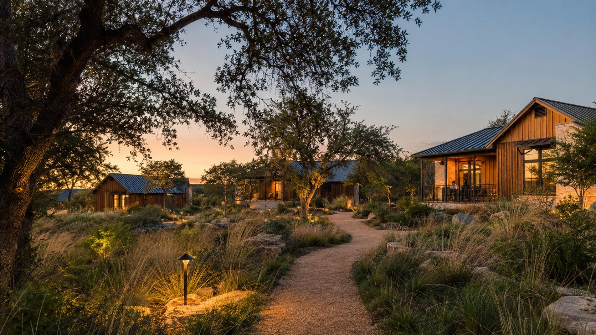

Build for the Stay, Not Just the Inspection
Why hospitality-first construction protects the guest experience, operating budget, and the next phase of growth.

A project can pass every inspection and still be difficult to operate. That is the gap hospitality-first construction is meant to close.
Building code, approved drawings, and final inspections matter. They protect life safety and establish the minimum requirements for the work. But they do not tell you whether housekeeping can turn every unit on a sold-out Sunday, whether a maintenance technician can reach a shutoff without walking across a guest deck, or whether the next phase can connect to utilities without tearing up the first one.
Outdoor hospitality has an added layer of complexity because the product is not just the room. It is the arrival, the path, the view, the quiet, the firepit, the water pressure, the temperature inside the unit, and the absence of service activity when a guest is trying to slow down. Those details live at the intersection of design, construction, and operations.
Hospitality-first construction does not mean expensive finishes or design without cost discipline. It means testing construction decisions against the way the property will actually be staffed, cleaned, maintained, and expanded — and against the experience guests are being promised. When that work happens during preconstruction, the owner can make tradeoffs on paper instead of paying for them after opening.
The inspection proves the project can open. Hospitality-first planning helps prove the property can operate.
The "Operational Cliff" Is Really a Collection of Workarounds
A small property can absorb a surprising amount of inefficiency. The owner knows where everything is. A cart can borrow the guest path. Supplies can live in a temporary room. One person can solve problems as they appear. Growth does not create those problems; it exposes them.
There is no universal unit count where a property suddenly becomes difficult to run. The threshold depends on the layout, unit mix, amenities, turnover window, seasonality, service model, and staffing plan. What changes at scale is the cost of every repeated task. A few extra minutes per unit becomes hours of labor. One undersized utility system affects more guests. A single maintenance shutdown can take a meaningful share of inventory offline.
That is the useful version of the operational-cliff idea: if the plan depends on people improvising every day, the property will eventually grow past the improvisation. Preconstruction is the best time to replace those workarounds with deliberate systems.
What Hospitality-First Construction Changes
The shift is simple. Instead of reviewing the drawings only for scope, code, cost, and constructability, the team also reviews them for the guest journey and the operating plan. That adds a few practical questions to every major decision.
- Arrival and guest circulation. Where does the experience begin? Can a guest move from parking to the unit without crossing deliveries, trash, or active service work? Are paths clear, safe, and appropriately lit without washing out the night sky?
- Back-of-house flow. Where do linens, supplies, carts, deliveries, and waste move? Is there enough storage in the right place? Can the team service the property during peak guest hours without putting operations on display?
- Utilities and maintenance access. Can one unit or zone be isolated without shutting down the property? Are panels, pumps, cleanouts, condensers, and shutoffs labeled, reachable, and protected from guest traffic?
- Durability and turnover. Will the finishes, hardware, fixtures, and exterior details hold up to weather and repeated guest use? Can housekeeping clean them efficiently, and can maintenance replace common components without special demolition?
- Future phases. Where will the next road, utility branch, service area, or group of units connect? What capacity is being installed now, and what is intentionally being deferred?
The Highest-Value Decisions Usually Happen Before Mobilization
The cost of moving a line on a drawing is small. The cost of moving a road, trench, pad, or mechanical system after installation is not. That is why hospitality-first construction should begin before the construction set is complete.
- Bring operations into preconstruction. Include the person who understands check-in, housekeeping, maintenance, deliveries, waste, and emergency response. If the operating team is not hired yet, assign someone to represent those functions.
- Walk a full-occupancy day on paper. Map guest arrivals, departures, cleaning, linen movement, trash, food service, maintenance calls, and vendor access. Test what happens when those activities overlap.
- Confirm the service backbone. Locate storage, staff parking, waste collection, maintenance space, cart charging, utility rooms, shutoffs, and service routes. These items are easy to shrink during design and expensive to recreate later.
- Build and inspect the first repeatable condition. Use the first unit, bathroom, deck, or utility connection as a field standard. Confirm waterproofing, flashing, clearances, access, finishes, cleanability, and replacement parts before repeating the detail across the property.
- Protect the standard through the build. Document approved details and substitutions. Verify the work before it is covered. Unit fourteen should not be a looser version of unit one.
- Price the next phase now. Even if expansion is not funded, identify the likely tie-ins, capacity limits, access routes, and temporary work that future construction will require.
Review the plan at full occupancy, not average occupancy. The hardest day to operate is the day the project must be ready for.
Invisible Infrastructure Is Still Part of the Guest Experience
Guests may never see the water, power, wastewater, communications, drainage, and mechanical systems behind a stay. They notice immediately when those systems are unreliable. Low pressure, slow hot water, an HVAC unit that cannot keep up, poor drainage at the path, or an outage that takes multiple units offline becomes a guest issue very quickly.
The answer is not to oversize every system. It is to define the actual demand, diversity, redundancy, maintenance access, and expansion plan with the engineer, operator, and builder. Owners should understand what is sized for opening day, what has reserve capacity, and what will need to change before a future phase is added.
The same discipline applies to small details. A shutoff in the wrong location, a condenser facing a private deck, or a cleanout under a future walkway may not affect the certificate of occupancy. It can affect every maintenance call that follows.
The Return Is Avoided Friction
Hospitality-first construction should not be sold with a blanket promise of a specific rate premium or operating margin. Every market and property is different. The more defensible capital case is the friction the owner avoids and the value the property is better positioned to protect.
- Less rework. Coordinating guest flow, service access, utilities, and future tie-ins before construction reduces the chance that completed work must be moved or rebuilt.
- More sellable inventory. Zoned utilities, accessible equipment, durable details, and repeatable parts can shorten downtime when something fails.
- Lower labor drag. Shorter routes, correctly placed storage, simpler cleaning, and clear maintenance access reduce wasted motion across thousands of repeated tasks.
- Better protection of rate and reputation. Privacy, quiet, reliable comfort, a clear arrival, and discreet service help the property deliver the experience it is promising.
- Cleaner expansion. Reserved capacity, planned tie-ins, and protected access can keep a future phase from disrupting the operating property more than necessary.
Not every hospitality-first decision costs more. Some are simply better coordination. Others require capital earlier in the project. The owner should see each decision clearly: what it costs now, what operating problem it solves, what risk it reduces, and whether it supports the next phase.
What We See in the Field
Across our work the same lesson appears in different forms: roads, utilities, accommodations, guest paths, gathering areas, and service access cannot be planned as separate layers. They compete for the same land and affect the same operating day.
The practical value is not a perfect plan with no tradeoffs. It is a plan where the tradeoffs are visible early. A longer utility route may protect a better guest zone. A dedicated service connection may cost more now but prevent carts from crossing the arrival path. A slightly different unit orientation may improve privacy while also giving maintenance better access.
Those decisions belong in one conversation with the owner, operator, designer, engineer, and builder. When they are split across separate handoffs, the field is left to reconcile them after the expensive work has started.
Six Questions to Ask Before the Drawings Are Locked
- How does the property operate on its busiest turnover day? Map arrivals, departures, cleaning, deliveries, waste, maintenance, and guest use during the same window.
- What can the guest see, hear, and smell from each unit and primary path? Check headlights, carts, equipment, service doors, condensers, waste, neighboring decks, and lighting.
- Can maintenance isolate and reach the problem? Verify shutoffs, panels, cleanouts, equipment clearances, replacement routes, labels, and safe access after landscaping is installed.
- Where do staff, supplies, linens, carts, and trash live? If the answer is temporary or off-site, quantify the daily labor and service impact before accepting it.
- What will be repeated, and how will the standard be verified? Approve the first condition, document it, control substitutions, and inspect before assemblies are concealed.
- What does phase two require from phase one? Identify capacity, tie-ins, construction access, staging, and the guest disruption created by the expansion plan.
Build the Operating Model Into the Property
The best outdoor hospitality properties feel simple to the guest because the complexity has been handled behind the scenes. That simplicity is not created by finishes alone. It comes from reliable infrastructure, clear circulation, accessible systems, durable details, and a team that can do its work without constantly interrupting the stay.
That is the return on hospitality-first construction. It gives the owner a better chance to protect guest trust, control avoidable operating cost, keep rooms available, and grow the property without rebuilding the first phase. None of those outcomes is automatic, but each becomes more likely when the operating plan is treated as a construction input from the beginning.
Do not ask only whether the project can be built. Ask whether it can be operated well on its busiest day — and expanded without undoing the work already paid for.
Forty questions. One hundred points.
See where your project is strong and where the risk is concentrated.